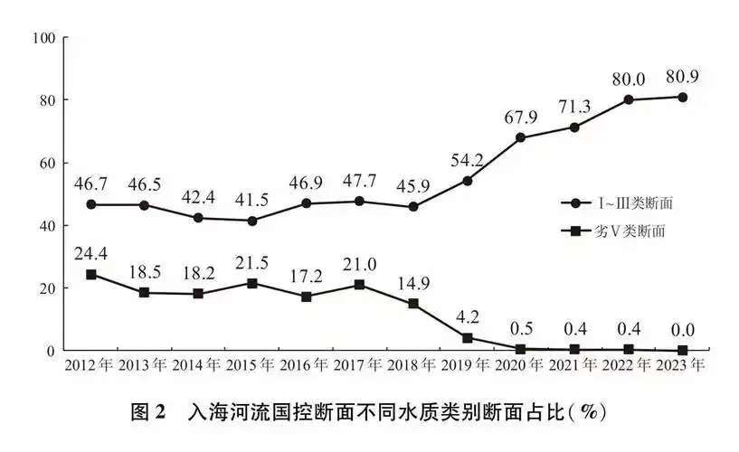
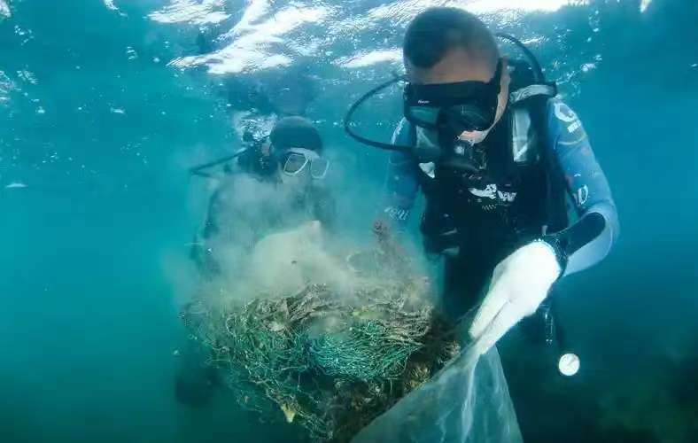
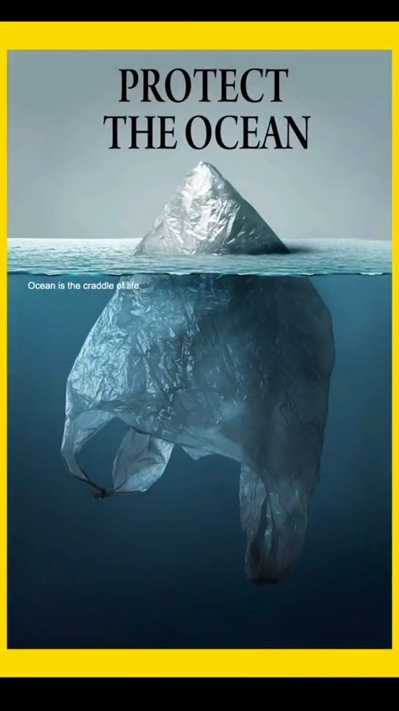

1. 全球塑料问题 Global Context
每年大量塑料进入海洋，对生态系统、渔业与人类健康构成持续性压力。本平台整合多源数据，提供可视化与模拟能力，帮助理解扩散与治理潜力。
2. 漂移与海流 Drift & Currents
海洋塑料的迁移受表层洋流、风场、随机湍流与海岸线阻挡作用。模拟中常用噪声场 + 大尺度流场叠加，近岸区域可发生聚集。

3. 数据来源与不确定性 Data Sources
数据包含：全球统计（OWID）、海流（再分析/模式）、生物多样性观测、合成示例。缺失或延迟时系统提供回退生成策略并标记状态。

4. 治理与政策情景 Policy
减排、回收、清理与创新材料构成多维策略。本平台的政策模拟为示意模型，不代表真实评估，需要结合生命周期与区域特征。

5. 你可以做什么 Actions
减少一次性塑料、支持回收体系、参与科学数据反馈、推动政策与教育传播，共同降低海洋塑料负荷。